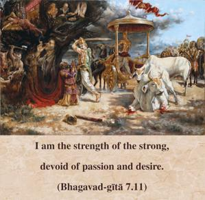
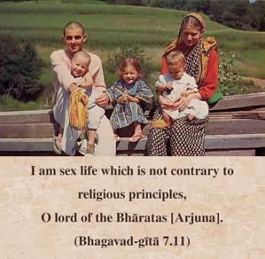

I am the strength of the strong, devoid of passion and desire. I am sex life which is not contrary to religious principles, O lord of the Bhāratas [Arjuna].


The strong man’s strength should be applied to protect the weak, not for personal aggression. Similarly, sex life, according to religious principles (dharma), should be for the propagation of children, not otherwise. The responsibility of parents is then to make their offspring Kṛṣṇa conscious.